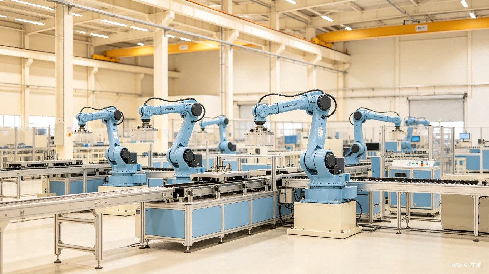

早上好，张工
2026年6月23日 星期二 · 生产线运行正常
系统运行正常
今日产量
1,247 件
+12.5%
vs 昨日
良品率
98.7%
+0.3%
较昨日
设备稼动率
92.1%
-1.2%
较昨日
在制工单
38 个
与昨日持平
生产进度概览
| 工单号 | 产品名称 | 进度 | 状态 | 预计完成 |
|---|---|---|---|---|
| WO-20260623-001 | 精密轴承组件 A-7 |
|
进行中 | 06-24 14:00 |
| WO-20260622-017 | 液压阀体 HV-220 |
|
已完成 | 06-23 09:30 |
| WO-20260623-005 | 涡轮叶片 TB-15 |
|
进行中 | 06-25 18:00 |
| WO-20260621-008 | 密封垫圈 SG-300 |
|
待检验 | 06-23 16:00 |
| WO-20260623-012 | 传动齿轮 GR-88 |
|
进行中 | 06-26 10:00 |
实时告警
5CNC-03 主轴温度异常
温度超过阈值 85°C，当前 92°C
3 分钟前
物料库存预警
不锈钢板材 304 库存低于安全线
18 分钟前
设备维护提醒
注塑机 INJ-02 即将到达保养周期
1 小时前
工单 WO-20260622-017 已完成
液压阀体 HV-220 全部工序已完成
2 小时前
质检报告已生成
密封垫圈 SG-300 批次 #B240618
3 小时前